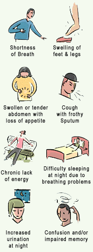

Comment savoir lorsqu'une attaque cardiaque survient?
La majorité des victimes ressentent une douleur ou pression au niveau du tose avant que l'attaque ne survienne. À la place ou en plus, près d'un tiers de ces patients présentent des symptomes allant de la douleur abdominale, une douleur au niveau du cou, une forte transpiration ou des nausées. Malheureusement, de nombreuses personnes ne font pas attention à ces symptomes. S'ils surviennent soudainement ou s'amplifient sur une période de quelques heures ou jours, il est raisonnable de suspecter une attaque cardiaque et se rendre à l'hopital pour vérification.
